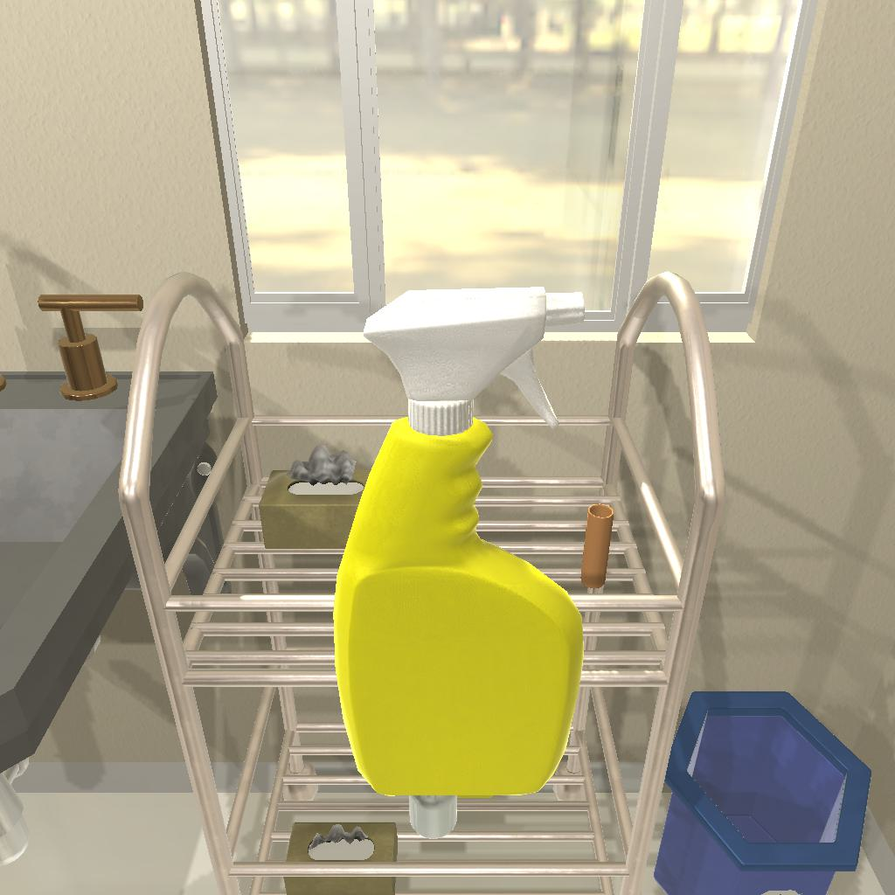

---------------------------------------------------------task: 28---------------------------------------------------------
--------------------------------------------------------------------------------------------------------------------------------------------------------------------
--------------------------------------------------------------------------------------------------------------------------------------------------------------------
Step:--------------------------------------------------------------------------2-------------------------------------------------------------------------------
----------------------------------------
VLM Prompt:
Image1:
**Instruction**
1. Analyze the provided image to identify all visible household objects, focusing on those relevant to the task description "find two spraybottle and put them in toilet."
2. Use the analysis of the image and the task hint "The agent must find an object of the desired type, pick it up, find the correct location to place it, put it down there, then look for another object of the desired type, pick it up, return to previous location, and put it down there with the other object." to answer the question: what is the most reasonable action in the choices for the task description "find two spraybottle and put them in toilet"?
4. Decide and write the answer using the template: The answer is: (i): , where i is the real number. If there is no desired object in the image, search every place based on **Initial Observation** to find the object. And if no one is exactly correct, choose a similar answer.
**Initial Observation**
You are in the middle of a room. Looking quickly around you, you can see bathtub (1), bathtubbasin (1), cart (1), sink (1), garbagecan (1), sinkbasin (1), countertop (1), drawer (1-4), toilet (1), toiletpaperhanger (1)
**Answer Choices**
(1): go to bathtub 1
(2): go to bathtubbasin 1
(3): go to sink 1
(4): go to garbagecan 1
(5): go to sinkbasin 1
(6): go to countertop 1
(7): go to drawer 1
(8): go to drawer 2
(9): go to drawer 3
(10): go to drawer 4
(11): go to toilet 1
(12): go to toiletpaperhanger 1
(13): put spraybottle 1 in/on cart 1
(14): examine spraybottle 1
(15): examine cart 1
**Answer**
Let's think step by step by following the instructions.
----------------------------------------
----------------------------------------
Original Response:
First, we need to analyze the image to identify all visible household objects. The image shows a spray bottle on a cart. There are no other spray bottles visible in this image.
Based on the task description "find two spraybottle and put them in toilet," the most reasonable first action would be to pick up the spray bottle that is already visible on the cart. However, since the task requires two spray bottles, and only one is visible, it is likely necessary to search other locations to find the second spray bottle.
Looking at the initial observation list, none of the locations explicitly mention another spray bottle. Therefore, the agent should check the storage areas such as drawers or the countertop, which are more likely to have such items.
The answer is: (14): examine spraybottle 1. This action will confirm possession of the first spray bottle before looking for the second one. After that, the agent should check likely locations such as drawers or the countertop to find the second spray bottle.
----------------------------------------
----------------------------------------
>>> Refine Original VLM Response and Get Pure Action: examine spraybottle 1
----------------------------------------
-----------------------------------------------------------------
Running time: 12.767530679702759 seconds
Total Money: 9.928180000000001
-----------------------------------------------------------------
-----------------------------------------------------------------
Text Observation:This is a normal spraybottle 1
-----------------------------------------------------------------
UNSUCCEED